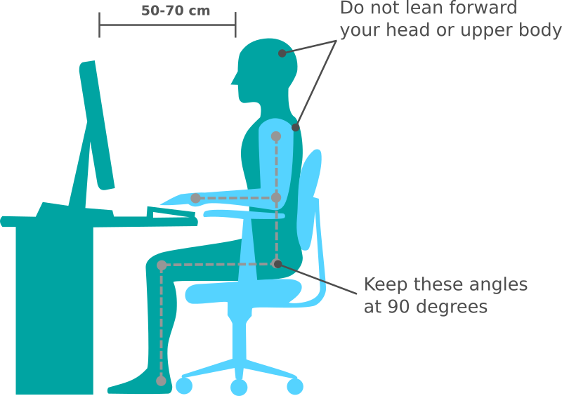

How to sit correctly
Sitting has impact on our health
„Sitting is the new smoking."
– Nilofer Merchant in Harvard Business Review.
„In the United States an estimated 149 million days of work per year are lost because of low back pain“
– WHO.
“Poor posture happens easily if one is intensely concentrating on the work at hand. It is very difficult to consciously maintain proper posture.”
“On average, people spend almost half the day (10 hours) sitting and less than 2 hours being active.”
How to sit correctly
1. Set up your working environment
- Prefer ergonomic chairs.
- Adjust the table and seat height, seat back position and keyboard tilt.
- Make sure the top of the screen is at or slightly below your eye level. If you are using laptop, try stacking on a pile of books to get the height you need and use a remote keyboard and mouse.
- Place your screen at least an arm's length away.
2. Sit up straight
- Sit with your bottom against the seat back.
- Sit straight and keep your torso at a 90-105° reclined angle.
- Relax.
- Make sure your elbows and wrists are supported.
- Knees should be slightly lower than your hips.
- Put your feet flat on the floor.
- Set goals and track your progress with Spine Hero.
3. Stand up and stretch
Our bodies are built for motion, therefore:
- Take regular breaks – stand up, stretch, change sitting position or simply walk around a little